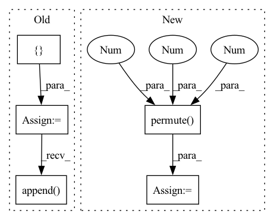

Pattern ID :7478
Before Change
k4, v4 = self.kv_query(r4)
// print(k4.shape) // torch.Size([bs, 128, 30, 57])
// print(v4.shape) // torch.Size([bs, 512, 30, 57])
batch_list = {
"k4e": [],
"v4e": [],
"r3e": [],
"r2e": [],
"key": [],
"value": [],
}
for i in range(B):
// expand to --- no, c, h, w
_k4e, _v4e = k4[i].expand(n_objects[i], -1, -1,
-1), v4[i].expand(n_objects[i], -1, -1, -1)
_r3e, _r2e = r3[i].expand(n_objects[i], -1, -1,
-1), r2[i].expand(n_objects[i], -1, -1, -1)
_key = keys[i, 1:n_objects[i] + 1]
_value = values[i, 1:n_objects[i] + 1]
// print(_k4e.shape) // torch.Size([n_objects, 128, 30, 57])
// print(_v4e.shape) // torch.Size([n_objects, 512, 30, 57])
// print(_r3e.shape) // torch.Size([n_objects, 512, 60, 114])
// print(_r2e.shape) // torch.Size([n_objects, 256, 120, 228])
batch_list["k4e"].append(_k4e)
batch_list["v4e"].append( _v4e)
batch_list["r3e"].append(_r3e)
batch_list["r2e"].append(_r2e)
batch_list["key"].append(_key)
batch_list["value"].append(_value)After Change
_r4t, _, _, _, _ = self.encoder_query(target_objects[i])
// print(_r4t.shape) // torch.Size([n_objects, 1024, 7, 7])
_correlation_r4 = F.conv2d(r4[i].unsqueeze(dim=0), _r4t, padding=3).permute(1 , 0 , 2, 3 )
// print(_correlation_r4.shape) // torch.Size([n_objects, 1, 30, 57])
k4, v4 = self.kv_query(torch.cat([_r4e, _correlation_r4], dim=1))
// print(k4.shape) // torch.Size([n_objects, 128, 30, 57])
// print(v4.shape) // torch.Size([n_objects, 512, 30, 57])In pattern: SUPERPATTERN
Frequency: 3
Non-data size: 5
Instances Fragment ID: 24750713
Project Name: hzxie/rmnet
Commit Name: 69815437b1b170901900d8efd3933ae5b815c928
Time: 2020-04-28
Author: root@haozhexie.com
File Name: models/stm.py
M Class Name: STM
N Class Name: STM
M Method Name: segment(6)
N Method Name: segment(5)
M Parent Class: torch.nn.Module
N Parent Class: torch.nn.Module
M File Name: models/stm.py
N File Name: models/stm.py
M Start Line: 288
M End Line: 312
N Start Line: 278
N End Line: 317
Before Change
batch_size, num_of_vertices, in_channels, num_of_timesteps = x.shape
data = Data(edge_index=edge_index, edge_attr=None, num_nodes=num_nodes)
lambda_max = LaplacianLambdaMax()(data).lambda_max
outputs = []
for time_step in range(num_of_timesteps):
outputs.append( torch.unsqueeze(self.cheb_conv(x=x[:,:,:,time_step], edge_index=edge_index,
batch = batch_size, lambda_max=lambda_max), -1))
spatial_gcn = F.relu(torch.cat(outputs, dim=-1)) // (b,N,F,T)
// convolution along the time axisAfter Change
tmp = tmp.permute(2,0,1) // (B*T_in, N_nodes, F_in)
output = F.relu(self.cheb_conv(x=tmp, edge_index=edge_index,
batch = batch_size*num_of_timesteps, lambda_max=lambda_max))
spatial_gcn = output.permute(1,2,0).reshape(num_of_vertices,self.nb_time_filter,batch_size,num_of_timesteps).permute( 2,0 ,1 ,3 ) // (B,N_nodes,F_out,T_in)
// convolution along the time axis
time_conv_output = self.time_conv(spatial_gcn.permute(0, 2, 1, 3)) // (b,F,N,T) Fragment ID: 24750937
Project Name: benedekrozemberczki/pytorch_geometric_temporal
Commit Name: 509a541a01913f5b45859b801c48b5fd264bd94a
Time: 2021-03-18
Author: He_YX@outlook.com
File Name: torch_geometric_temporal/nn/convolutional/mstgcn.py
M Class Name: MSTGCN_block
N Class Name: MSTGCN_block
M Method Name: forward(4)
N Method Name: forward(4)
M Parent Class: nn.Module
N Parent Class: nn.Module
M File Name: torch_geometric_temporal/nn/convolutional/mstgcn.py
N File Name: torch_geometric_temporal/nn/convolutional/mstgcn.py
M Start Line: 36
M End Line: 41
N Start Line: 44
N End Line: 48
Before Change
time = torchaudio.transforms.TimeMasking(time_mask_param=time_mask_param)
if num > 1:
pieces = []
for i in range(1, num + 1):
start = piece_length * (i - 1)
end = piece_length * i
piece = spec[:, start:end]
if i == num:
piece = spec[:, start:]
freq(piece)
time(piece)
pieces.append( piece)
return torch.cat(pieces, dim=1)
else:After Change
to_be_masked = torch.stack(list(chunks[:-1]), dim=0).unsqueeze(1)
time_mask(to_be_masked)
freq_mask(to_be_masked)
masked = to_be_masked.squeeze(1).permute(1 , 0 , 2 ) .reshape((spec.shape[0], -1))
return torch.cat([masked, chunks[-1]], dim=1)
Fragment ID: 24750892
Project Name: ivankunyankin/quartznet-asr
Commit Name: 28f999e7cfbefb66c9545f32e76a7454a7432aac
Time: 2021-07-01
Author: IKunyankin@gmail.com
File Name: utils.py
M Class Name: AnonimousClass
N Class Name: AnonimousClass
M Method Name: augment(4)
N Method Name: augment(4)
M Parent Class:
N Parent Class:
M File Name: utils.py
N File Name: utils.py
M Start Line: 57
M End Line: 82
N Start Line: 57
N End Line: 74